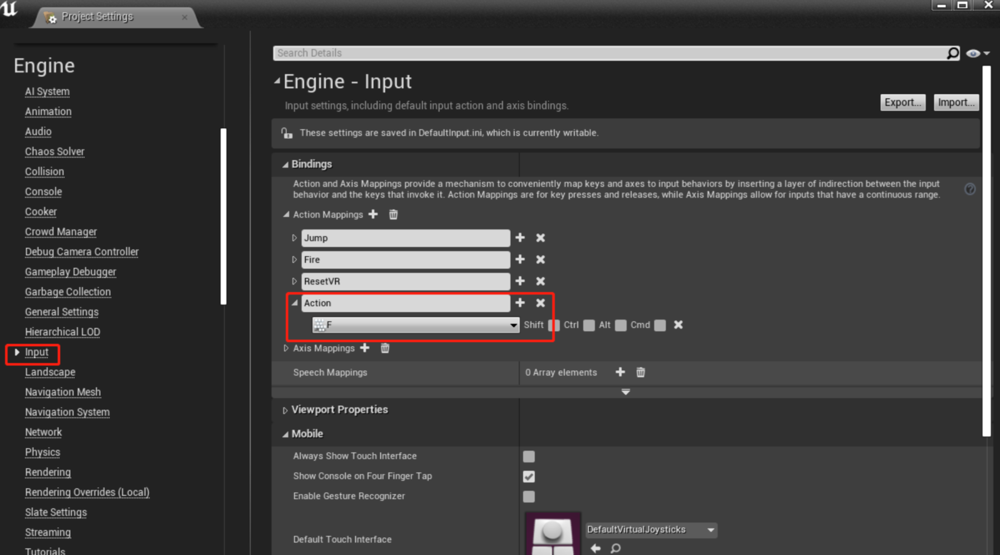

25. 触发区域内的键盘响应开关灯
接上一节教程，创建一个新的 C++ Actor 子类并将其命名为 LightSwitchPushButton 。我们将在头文件中定义四个东西 —— 我们将定义一个 UPointLightComponent、USphereComponent、float 变量和 void 函数。
下面是最终的头代码。
LightSwitchPushButton.h
#pragma once
#include "CoreMinimal.h"
#include "GameFramework/Actor.h"
#include "LightSwitchPushButton.generated.h"
UCLASS()
class UNREALCPP_API ALightSwitchPushButton : public AActor
{
GENERATED_BODY()
public:
// Sets default values for this actor's properties
ALightSwitchPushButton();
protected:
// Called when the game starts or when spawned
virtual void BeginPlay() override;
public:
// Called every frame
// virtual void Tick(float DeltaTime) override;
// declare point light comp
UPROPERTY(VisibleAnywhere, Category = "Light Switch")
class UPointLightComponent* PointLight;
// declare sphere comp
UPROPERTY(VisibleAnywhere, Category = "Light Switch")
class USphereComponent* LightSphere;
// declare light intensity variable
UPROPERTY(VisibleAnywhere, Category = "Light Switch")
float LightIntensity;
// declare ToggleLight function
UFUNCTION(BlueprintCallable, Category = "Light Switch")
void ToggleLight();
};
接下来，在我们的 .cpp 文件中，让我们首先 #include 我们将在代码中使用的必要脚本。包括 Components/PointLightComponent.h 和 Components/spherecomcomponent.h 两个文件。
#include "LightSwitchPushButton.h"
// include these header files
#include "Components/PointLightComponent.h"
#include "Components/SphereComponent.h"
我们将在构造函数中设置 actor 的所有默认属性。首先让我们设置我们的 float 变量 LightIntensity 为 3000.0f，它将使光相对于其他对象看起来足够明亮。接下来，我们将创建我们的 UPointLightComponent 并将它设置为我们的 RootComponent 。之后，我们将创建 USphereComponent ，当我们的玩家在半径内时，它将作为碰撞球体。然后，我们将创建简单的 ToggleLight() 函数来切换灯光的可见性状态。稍后我们将从玩家代码中调用该函数。下面是LightSwitchPushButton 角色的最后一个 .cpp 文件。
LightSwitchPushButton.cpp
#include "LightSwitchPushButton.h"
#include "Components/PointLightComponent.h"
#include "Components/SphereComponent.h"
// Sets default values
ALightSwitchPushButton::ALightSwitchPushButton()
{
// Set this actor to call Tick() every frame. You can turn this off to improve performance if you don't need it.
PrimaryActorTick.bCanEverTick = true;
LightIntensity = 3000.0f;
PointLight = CreateDefaultSubobject<UPointLightComponent>(TEXT("Point Light"));
PointLight->Intensity = LightIntensity;
//PointLight->bVisible = true; ///< 过时了
//PointLight->SetVisibleFlag(true);
PointLight->SetVisibility(true);
RootComponent = PointLight;
LightSphere = CreateDefaultSubobject<USphereComponent>(TEXT("Light Sphere Component"));
LightSphere->InitSphereRadius(300.0f);
LightSphere->SetCollisionProfileName(TEXT("Trigger"));
LightSphere->SetCollisionResponseToChannel(ECC_Pawn, ECR_Ignore);
LightSphere->SetupAttachment(RootComponent);
}
// Called when the game starts or when spawned
void ALightSwitchPushButton::BeginPlay()
{
Super::BeginPlay();
}
void ALightSwitchPushButton::ToggleLight()
{
PointLight->ToggleVisibility();
}
接下来，和上一节类似，让我们向项目添加一个 Action 输入。在本例中，我们将把 Action 输入绑定到键盘的 F键。转到 编辑>项目设置 ( Edit > Project Settings)。然后选择 Input 选项。单击 Action Mappings 旁边的加号。调用新的输入 Action 并从下拉菜单中选择 F 。


【以下我们把目光转到 xxxCharacter.h / .cpp 上】
在 xxxCharacter.h文件中，在 OnFire 方法下添加 OnAction 方法。
protected:
/** Fires a projectile. */
void OnFire();
// on action
void OnAction();
此外，我们还必须包含 LightSwitchPushButton 头文件，这样我们的角色才能访问它的功能。
// declare overlap begin function
UFUNCTION()
void OnOverlapBegin(class UPrimitiveComponent* OverlappedComp, class AActor* OtherActor, class UPrimitiveComponent* OtherComp, int32 OtherBodyIndex, bool bFromSweep, const FHitResult& SweepResult);
// declare overlap end function
UFUNCTION()
void OnOverlapEnd(class UPrimitiveComponent* OverlappedComp, class AActor* OtherActor, class UPrimitiveComponent* OtherComp, int32 OtherBodyIndex);
// declare current light switch
class ALightSwitchPushButton* CurrentLightSwitch;
同时还声明了 UCapsuleComponent 来处理我们的触发事件
UPROPERTY(VisibleAnywhere, Category = "Trigger Capsule")
class UCapsuleComponent* TriggerCapsule;
在构造函数中添加触发器胶囊并将其绑定到重叠事件。接着设置变量 CurrentLightSwitch 为 NULL 。
AUnrealCPPCharacter::AUnrealCPPCharacter()
{
...
// create trigger capsule
TriggerCapsule = CreateDefaultSubobject<UCapsuleComponent>(TEXT("Trigger Capsule"));
TriggerCapsule->InitCapsuleSize(55.f, 96.0f);;
TriggerCapsule->SetCollisionProfileName(TEXT("Trigger"));
TriggerCapsule->SetupAttachment(RootComponent);
// bind trigger events
TriggerCapsule->OnComponentBeginOverlap.AddDynamic(this, &AUnrealCPPCharacter::OnOverlapBegin);
TriggerCapsule->OnComponentEndOverlap.AddDynamic(this, &AUnrealCPPCharacter::OnOverlapEnd);
// set current light switch to null
CurrentLightSwitch = NULL;
}
进一步，将 Action 输入绑定连接到玩家
void AUnrealCPPCharacter::SetupPlayerInputComponent(class UInputComponent* PlayerInputComponent)
{
...
// Bind action event
PlayerInputComponent->BindAction("Action", IE_Pressed, this, &AUnrealCPPCharacter::OnAction);
}
将 OnAction() 函数添加到玩家脚本中。该函数将检查 CurrentLightSwitch 是否为 NULL 。如果 CurrentLightSwitch 不为 NULL，那么当玩家按下动作键 F 时，将切换灯光的可见性（开关灯）。然后，添加重叠函数来设置和取消 CurrentLightSwitch
void AUnrealCPPCharacter::OnAction()
{
if(CurrentLightSwitch)
{
CurrentLightSwitch->ToggleLight();
}
}
// overlap on begin function
void AUnrealCPPCharacter::OnOverlapBegin(class UPrimitiveComponent* OverlappedComp, class AActor* OtherActor, class UPrimitiveComponent* OtherComp, int32 OtherBodyIndex, bool bFromSweep, const FHitResult& SweepResult)
{
if (OtherActor && (OtherActor != this) && OtherComp && OtherActor->GetClass()->IsChildOf(ALightSwitchPushButton::StaticClass()))
{
CurrentLightSwitch = Cast<ALightSwitchPushButton>(OtherActor);
}
}
// overlap on end function
void AUnrealCPPCharacter::OnOverlapEnd(class UPrimitiveComponent* OverlappedComp, class AActor* OtherActor, class UPrimitiveComponent* OtherComp, int32 OtherBodyIndex)
{
if (OtherActor && (OtherActor != this) && OtherComp)
{
CurrentLightSwitch = NULL;
}
}
编译代码。拖放 actor （LightSwitchPushButton）到场景中，当玩家进入球形触发区域，点击 F 键开关灯。
最后的效果图如下：